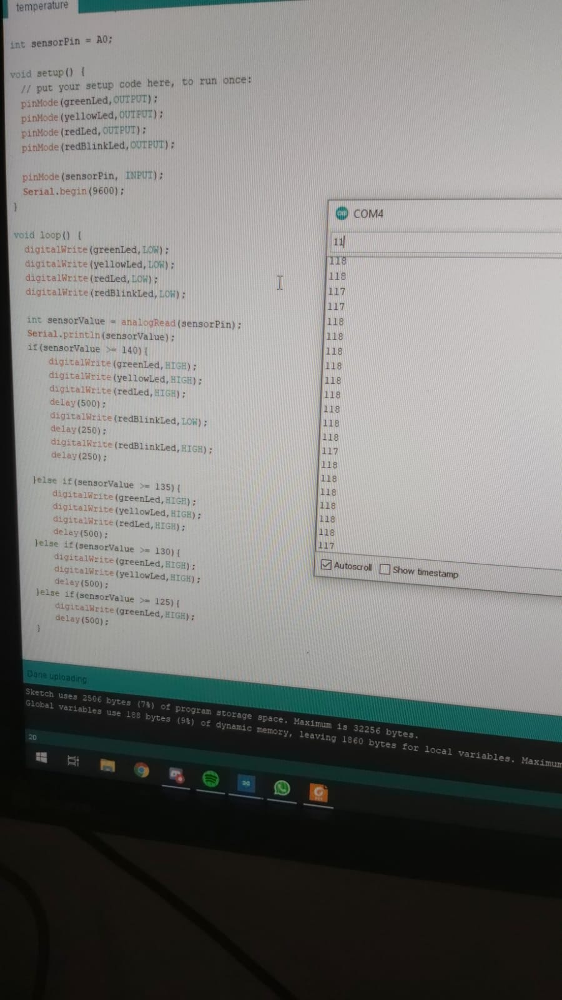

Challenge 2 - Wearables
Research:
Ik heb op google heel wat plaatjes gezocht en bekeken van wearables designs. Uiteindelijk heb ik wat designs gevonden en er meer research naar gedaan.
Smartwatch:
Smart watch kan honderden apps installeren, terwijl anderen smart watches Anderen Smart Watches alleen notificaties konden tonen.
De Smart Watch heeft een ingebouwde hartslagmeter, waarmee je je hartslag continu in de gaten kan houden. Door de dataverbinding met je Iphone kun je bijvoorbeeld het weerbericht opvragen, data uitwisselen met de gezondheidsapp en Siri dingen vragen op spraakcommando’s.
De Apple Watch is te combineren met verschillende bandjes, je kunt hierbij kiezen uit allerlei kleuren en materialen. De banden zijn gemakkelijk te verwisselen, dit komt door het klikmechanisme. Er zijn verschillende formaten, je hebt: 38mm/40mm of 42mm/44mm.
De maker van Smartwatch is Apple. Ik vind dit product een erg gaaf project, ik vind het namelijk echt gaaf dat een klein horloge zoveel data kan laten zien. Het gaafste vind ik dat het in contact is met de gezondheidsapp, hierdoor krijg je veel data binnen die te maken hebben met je gezondheid, zoals het hartritme. Ik ben zelf hartpatiënt daarom spreekt dit mij ook zo aan, het lijkt mij heel fijn als je elke seconde van de dag bij deze data kan en dus kan controleren of alles nog goed werkt.
https://www.iculture.nl/apple-watch/
Bodycam:
Een bodycam is een kleine draagbare camera/gopro die vooral gebruikt wordt door politie en andere wetshandhavers. De camera neemt de interactie tussen burger en wetshandhaver op.
Elke politie mag zelfstandig besluiten of hij of zij gebruik wilt maken van bodycams.
Bodycams worden in Nederland vrijwel nooit ingezet omdat dit als doel heeft het versterken van vertrouwen van het politieoptreden.
Het is belangrijk dat de agent niet alleen het incident filmt, maar ook de aanleiding daarvan.
Burgers hebben ook toegang tot de beelden, zij mogen de beelden opvragen als bewijsmateriaal. Omstanders die op beeld staan maar niks met het incident te maken hebben, moeten geblurd worden.
De maker van het product is GoPro. Ik vind dit product heel handig voor de politie, maar ook voor de persoon die misschien in aanmerking is gekomen met de politie. Op deze manier komt de waarheid altijd boven water en dat vind ik daarom ook zo indrukwekkend aan deze gadget.
https://controlealtdelete.nl/bodycam
Child tracker design:
Het gebruikt van locatie-trackers voor kinderen zal in de toekomst erg toenemen. Wanneer de tracker op een juiste manier wordt uitgevoerd, kan dit zorgen voor een meerwaarde voor de ouder en het kind.
De child tracker is er om problemen voor kinderen te voorkomen en om gevaren voor kinderen te ontwijken. Je kan het op straat gebruiken, maar in het huishouden.
Er zijn potentiele gevaren binnen en buitenshuis onderzocht. Vervolgens zijn er meerdere mogelijkheden geïdentificeerd om een veiliger huisomgeving te creëren.
De maker van de Child Tracker is Slimdesign. Ik vind dit een heel handig product voor jonge kinderen en ik zou dit ook zeker zelf gebruiken wanneer ik kinderen heb. Ik vind het erg indrukwekkend, dat zoiets als dit mogelijk is. je voorkomt hiermee zoveel problemen, je kind komt in een veel veiligere situatie terecht met deze gadget. Daarom vind ik het zo’n fijn product.
https://slimdesign.com/project/child-tracker-design/
Tinkering:
Temperatuurmeters:
Bij de eerste demo heb ik een temperatuur meter gemaakt, waarbij de 3 lampjes weergeven hoe warm het is. Bij 1 lampje aan valt de temperatuur qua warmte nog mee, bij het 2e lampje is het al een stukje warmer en bij het derde lampje is het heel warm.
Bij de 2e demo heb ik er een 4e lampje aan toegevoegd, wanneer het dus heel warm is, gaat het 4e lampje knipperen. Dit betekend dus dat het bloedheet is.
Bij beide demo’s lukte het mij niet om de lampjes precies achter elkaar aan te krijgen, soms gingen er twee tegelijk aan en viel de eerste daarna uit.
Uiteindelijk heb ik voor mijn eind product mijn arduino wat rustiger gehouden en het dus bij 2 lampjes gehouden. Bij een rood lampje is het redelijk warm, maar wanneer het groene lampje gaat branden is het heel warm.
Design and build:
Mijn product is een temperatuur meter, hierbij brand het rode lampje als het koud is en wanneer de sensor merkt dat het warm wordt gaat het groene lampje branden. Ik zelf vind dit een handig product, als je het bijvoorbeeld op een bepaalde graad vaststelt. Bijvoorbeeld alles onder de 20 graden is koud en er boven is warm. Zo weet jij bijvoorbeeld als jij je bed uitkomt wat voor kleding je aankan trekken. Ik vind dit product goed bij de topic wearables passen aangezien dit jou als persoon op een handige manier laat merken wat ongeveer de temperatuur is.
Ik vind dit product het meeste lijken op de Smart Watch aangezien je bij de SmartWatch ook data krijgt vanuit de omgeving. Hoeveel graden het bijvoorbeeld is of hoe snel je hart klopt.
Showcase
Reflect
Ik vind wearables erg handig en ik ben ook van mening dat dit alleen nog maar meer gaat worden. Ik denk zelfs dat we in de toekomst alleen nog maar wearables hebben en dat het toe wordt gepast in kleding. Neem het voorbeeld uit het college, hier werd verwezen naar een schoen die je pizza kan bestellen. Ik denk dat dit soort technieken alleen nog maar meer gaan worden in de toekomst.
Ik vind mijn eindproduct ook een typisch voorbeeld van een wearables, het enige wat anders is dat je het niet draagt. Verder is het een erge handige uitvinding die aangeeft wanneer de temperatuur hoger wordt.
Mijn ervaring bij het gebruiken van deze technologie is erg positief, de wearables van nu zijn klein en erg handig. Ze geven jou de informatie die jij op dat moment nodig hebt
